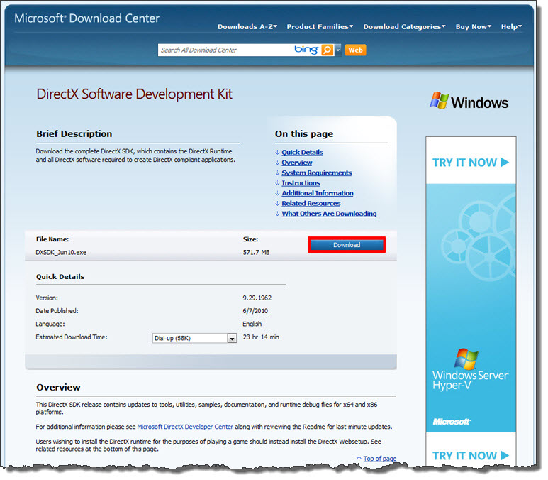
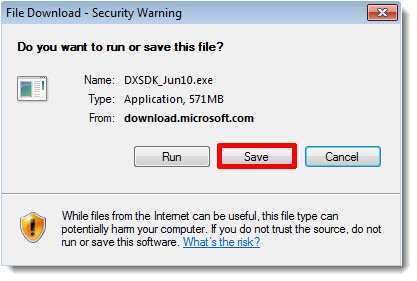
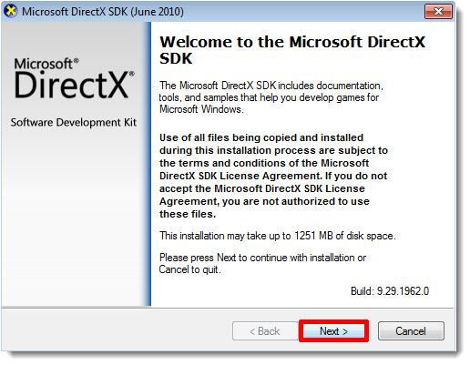
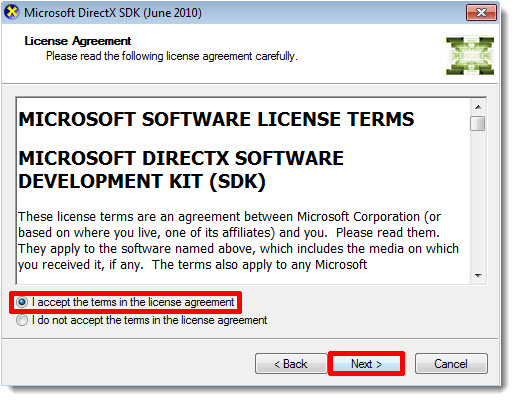
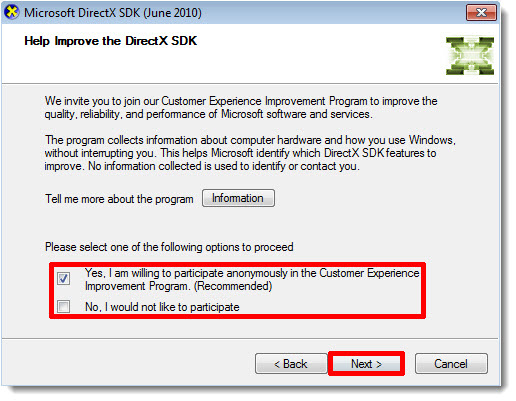
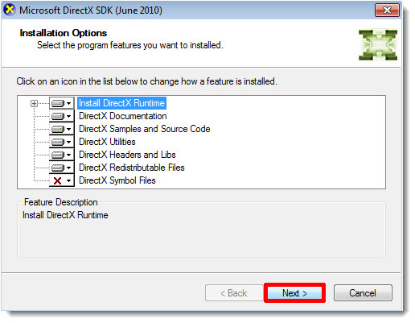
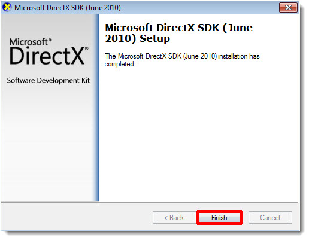

Download
and Install DirectX SDK
For our first step, we are going to download and install the June
2010 version of the SDK.
If you have not already downloaded the DirectX SDK, point your browser to
the DirectX SDK and follow the on-screen instructions. If you are using the Firefox browser, those will appear as shown below.
1) Click download to get this started. Please note that this download may take some time if you have a slow connection.
(click to enlarge)

2) Save File and Run.

3) Once the download has completed you can start to install it. Run the file DXSDK_Feb10.exe and press Next on the following window. Depending upon your windows account, User account control may ask for your permission to continue, agree to this.
(click to enlarge)

4) Accept the terms and conditions.
(click to enlarge)

5) Next you will be presented with a user feedback form. It's your
choice whether to participate, press
Next.
(click to enlarge)

6) Select a folder location or go along with the default, press
Next.
(click to enlarge)

7) You can also leave the default settings in the next
window, press Next.
(click to enlarge)

8) The install will take a few moments. When completed press Finish.
(click to enlarge)

(click to enlarge)

This completes our first step.
Now that we have the DirectX SDK installed we can
move to the next step of
our tutorial.
Install Visual Studio
C++ Express 2008
Install Visual Studio
C++ Express 2010 |
{kind=link}
{kind=link}
{kind=link}
{kind=link}
{kind=link}
{kind=link}